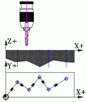
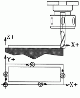
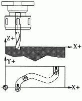

Como consecuencia de las diferencias entre las máquinas a automatizar, de las dificultades técnicas en el diseño de las unidades de control y de condicionamientos económicos, se han originado diversos tipos de control numérico, que pueden ser clasificados en tres tipos:
- Control numérico "Punto a punto"
- Control numérico "Paraxial"
- Control numérico "Continuo"
Control numérico Punto a punto

Este
sistema controla el posicionamiento de la herramienta en los
sucesivos puntos donde deben efectuarse una o varias operaciones de
mecanizado, no tiene importancia la trayectoria sino el
posicionamiento final.

Con
este sistema, es posible controlar, además de la posición del
elemento desplazable, la trayectoria seguida por el mismo según la
dirección de algunos de los ejes coordenados.
 En los sistemas de posicionamiento continuo, los desplazamientos del elemento desplazable son controlados en todo momento, de manera que las posiciones sucesivas del mismo deben corresponder siempre a la trayectoria preestablecida.